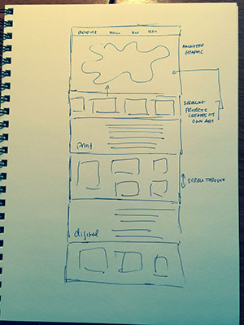
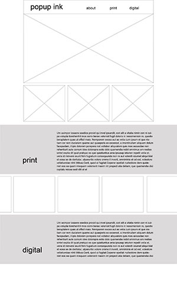

The first site I am inspired by is andrevv.com. I like the use of parallax and scrolling to take the user through the site. I also love the movement and how it gives the user the experience of being part of the site, rather than an observer of it. I like how the color divides the sections, and the scrolling makes the cougar animate. I love the responsive color elements and how they create something new and exciting, when you resize the browser window.
The second site I like is ala.ch This site takes parallax and scrolling to another level. I like how when the user scrolls the stie not only moves up and down, but activates various types of horizontal scrolling and animation effects across the site. It is very effective and engaging.
The website andrevv.com uses color blocks, mimimal type and graphics to take you through the site. The content is centered which translates well when resizing the browser window.
The website ala.ch uses modules and type treatments to take the user through the site. As you scroll the modules animate, which I think is very effective. However, it looks like it does not work as well when it comes to being responsive. Content starts to get cut off when the width of the brower is reduced.
PopUp Ink sketch
PopUp Ink wireframe
